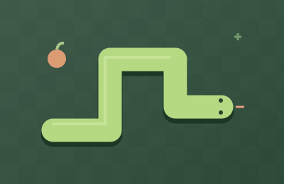
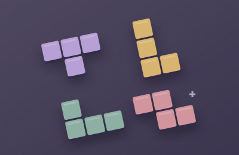

跳到游戏区域
独乐
.
SOLO ARCADE
单机 · 即点即玩
返回首页
首页
/
棋盘策略
/
五子棋
THINK A MOVE AHEAD
五子棋
棋盘策略
方寸之间，藏着你的下一步。
收藏游戏
棋盘策略
五子棋
本局得分
0
个人最佳
0
重新开始
Ⅱ
SOLO TIME
休息一下
准备好了，再接着玩。
继续游戏
回到首页
KEEP THE GOOD TIMES GOING
下一局，也有好心情。
2048
小小的数字，大大的上瘾。
↗

贪吃蛇
再吃一口，就真的最后一口。
↗

方块消除
把生活的棱角，拼得刚刚好。
↗
请开启 JavaScript 来游玩。